% AR_DIC_DEMO_PLOTTING Demo to plot output of AR_DIC_Demo_process.m % % Run this script after AR_DIC_Demo_process.m to plot results. % Run in sections (Ctrl + Enter) to view plots % Basic plots in demo: % Displacement magnitude map % Velocity vector field % Contraction volume vs. time % Contraction frequency heat map % Contraction magnitude heat map % Accumulative spatial contraction map % Smallest independent regions % Raw strain vs. time at maximum strain location % Principal strain vs. time at maximum strain location % Raw strain field % Principal strain field % Displacement vs. time at maximum location, BPM calculation % Power spectrum of reference image % Synthetic topography image to export % % Adaptive Reference Digital Image Correlation v 1.0 2018 % Biomaterials and Mechanotransduction Lab University of Nebraska-Lincoln % % See also: % AR_DIC_DEMO % AR_DIC_DEMO_PROCESS
load('demo_data.mat')%load results from data file. Comment out if using newly %calculated results. %Set up plotting options: ncont=50; %number of contour levels in plots qscale=4; %quiver plot arrow scale %set plot defaults, white background, linewidth of 2 [~]=get(0,'Factory');%Commands to set all figure backgrounds to white set(0,'defaultfigurecolor',[1 1 1]); set(0,'defaultlinelinewidth',2); load('cmap_custom.mat')%load custom strain color map %Run in sections to explore plots: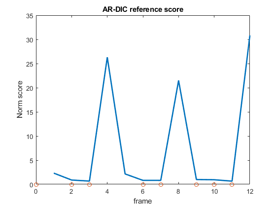
%-------------------Displacement, velocity--------------------------------- contour_frame=plot_contour(contract,'disp',ncont,'parula'); quiver_frame=plot_quiver(contract,'vel',qscale,'parula','auto'); %supplementary: % disp_max=plot_disp_location(contract,'max');%displacement trace % binary_video=plot_binary_mask(contract); %--------------------------------------------------------------------------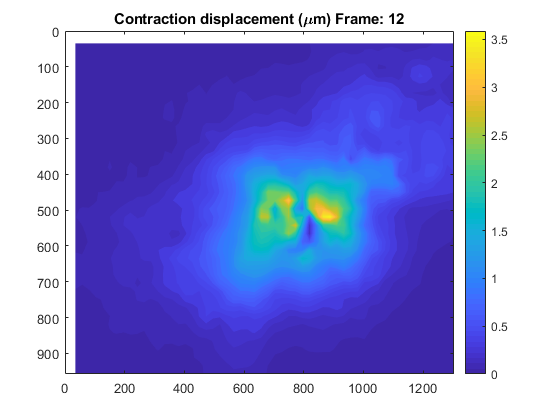 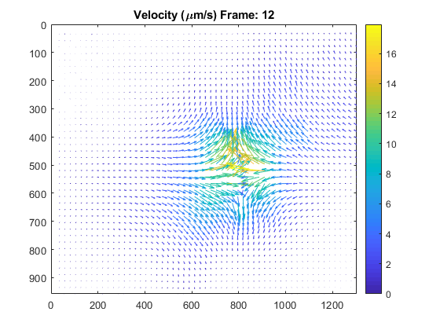
%----------------------Contraction volume----------------------------------
plot_contraction_volume(contract);
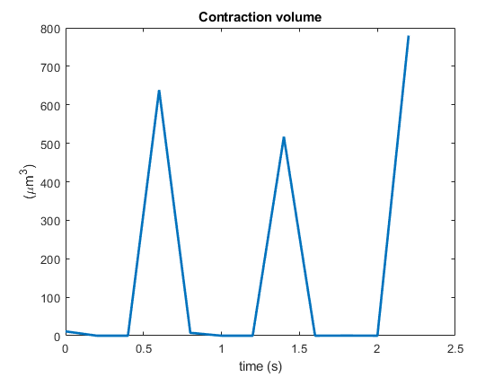 %----------------------------Heat maps------------------------------------- figure_handle=heatmap_frequency(contract,ncont,'jet'); magnitude_heatmap=heatmap_magnitude(contract,ncont,'jet');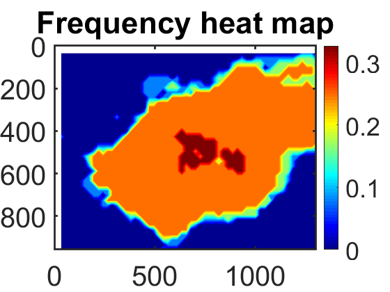

%Accumulative spatial contraction (ASC) map, smallest independent regions ASC_map(contract.tree,'3D',0);%ASC map plot_node_array(leaves_s100,contract);%smallest independent regions %--------------------------------------------------------------------------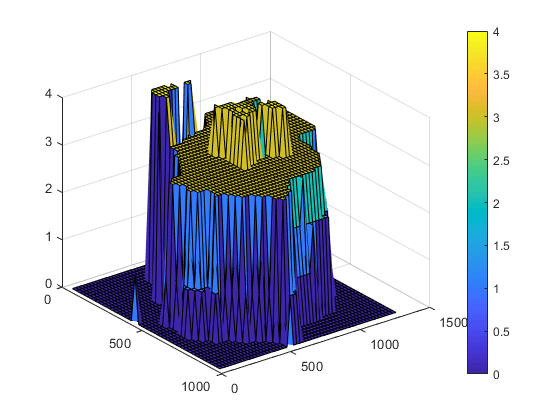 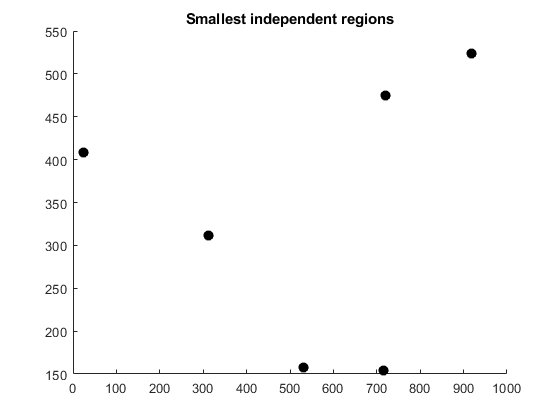
%------------------------Strain trace plots-------------------------------- plot_strain(strains_s2,'raw',xind_s2,yind_s2,contract.timestep); %raw strain at maximum location plot_strain(strains_principal_s2,'principal',xind_s2,yind_s2,contract.timestep);%principal strain at maximum location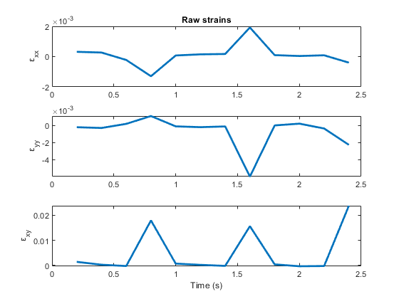 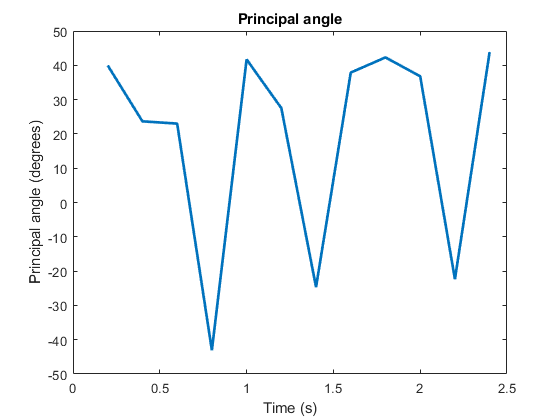 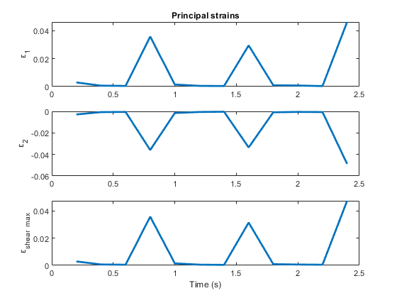
%--------------------------Raw Strain maps--------------------------------- % plot strain maps EXX EYY EXY mapstyle2=cmap_comp_tens; frame_s=max_frame_s2; figure contourf(contract.x_mat,contract.y_mat,strains_s2{1,frame_s}.Exx,ncont,'LineStyle','none'); title(['Strain ',char(949),'_x_x']); axis ij axis([0 contract.xdim 0 contract.ydim]) caxis([-0.1,0.1]) %caxis([-max_val_s2,max_val_s2]) colormap(mapstyle2) colorbar; figure contourf(contract.x_mat,contract.y_mat,strains_s2{1,frame_s}.Eyy,ncont,'LineStyle','none'); title(['Strain ',char(949),'_y_y']); axis ij axis([0 contract.xdim 0 contract.ydim]) caxis([-0.1,0.1]) colormap(mapstyle2) colorbar; figure contourf(contract.x_mat,contract.y_mat,strains_s2{1,frame_s}.Exy,ncont,'LineStyle','none'); title(['Strain ',char(949),'_x_y']); axis ij axis([0 contract.xdim 0 contract.ydim]) caxis([-0.1,0.1]) colormap(mapstyle2) colorbar; %--------------------------------------------------------------------------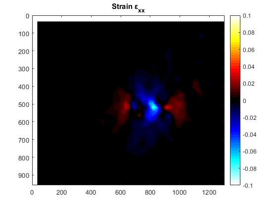 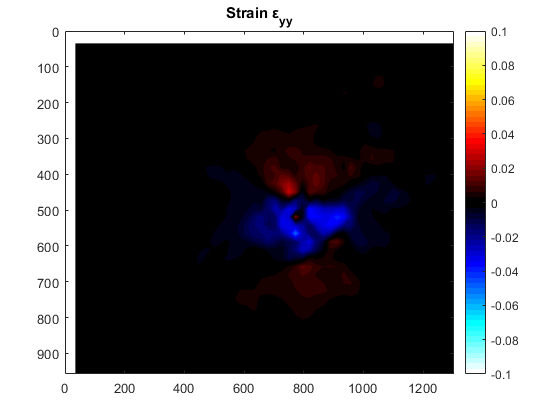 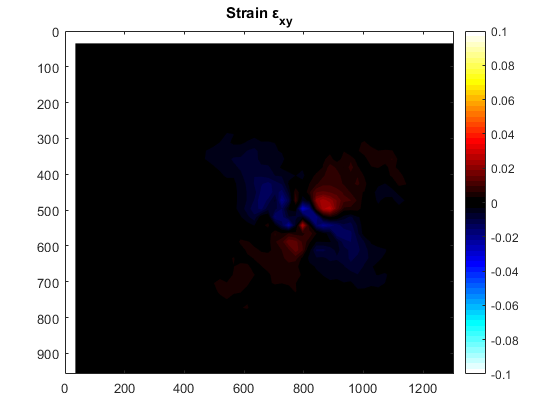
%--------------------Principal Strain maps--------------------------------- %strain map S1, S2 mapstyle2=cmap_comp_tens;% mapstyle2='hot'; frame_s=contract.max_disp_frame; figure contourf(contract.x_mat,contract.y_mat,strains_principal_s2{1,frame_s}.s1,ncont,'LineStyle','none'); title(['Strain ',char(949),'_1']); axis ij axis([0 contract.xdim 0 contract.ydim]) caxis([-0.1,0.1]) %caxis([-max_val_s2,max_val_s2]) colormap(mapstyle2) colorbar; figure contourf(contract.x_mat,contract.y_mat,strains_principal_s2{1,frame_s}.s2,ncont,'LineStyle','none'); title(['Strain ',char(949),'_2']); axis ij axis([0 contract.xdim 0 contract.ydim]) caxis([-0.1,0.1]) colormap(mapstyle2) colorbar; figure contourf(contract.x_mat,contract.y_mat,strains_principal_s2{1,frame_s}.max_eng_shear,ncont,'LineStyle','none'); title(['Strain ',char(949),'_shear']); axis ij axis([0 contract.xdim 0 contract.ydim]) caxis([-0.1,0.1]) colormap(mapstyle2) colorbar; %supplementary: % figure % for nn=1:contract.num_frame % mapstyle2=cmap_comp_tens;% mapstyle2='hot'; % frame_s=nn; % contourf(contract.x_mat,contract.y_mat,strains_s2{1,frame_s}.Exx,ncont,'LineStyle','none'); % title(['Strain ',char(949),'_x_x']); % axis ij % axis([0 contract.xdim 0 contract.ydim]) % caxis([-0.1,0.1]) %caxis([-max_val_s2,max_val_s2]) % colormap(mapstyle2) % colorbar; % strain_frame(nn)=getframe(gcf); % end %--------------------------------------------------------------------------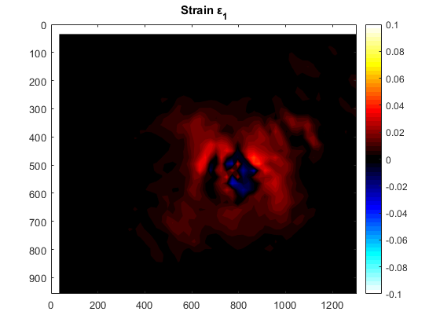 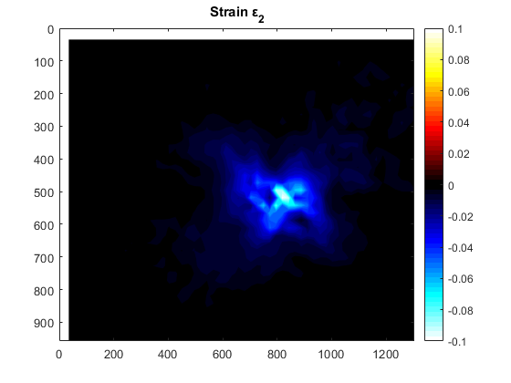 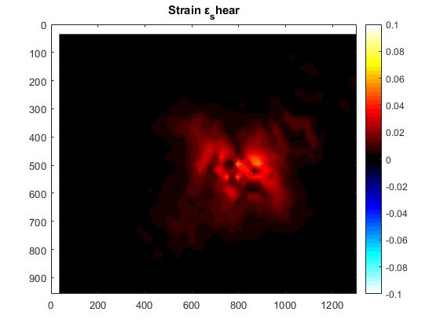
%--------------------Plot reference power spectrum------------------------- val_image=imread('demo_frame.tif'); %reference frame caxis_lim=[0,8.5]; plot_power_spectrum(val_image,pxscale,caxis_lim); %--------------------------------------------------------------------------

%------------------intuitive topography map in Tangram--------------------- %input parameters save_images=0;%to save images set save_images to 1. bits=16; %image bitdepth to save high_alpha=0.82; %.82 (Mt. Diablo elevation) low_alpha=.93; %.93 (Sea level) tile_size=256; %standard tile size of Tangram tile (256 x 256 px) opt='all'; %'all' or 'maxmin' row=6; %number of rows vidobj_holder={contract}; frame_holder={[1,12]}; %frames to plot [RGBmat,Alpha]=export_to_map(vidobj_holder,frame_holder,row,high_alpha,low_alpha,tile_size,opt); if save_images==1 imwrite(RGBmat,'testrgb.png','png','Alpha',Alpha,'BitDepth',bits); imwrite(rgb2gray(RGBmat),'testgray.png','png','BitDepth',bits); end imshow(RGBmat) %--------------------------------------------------------------------------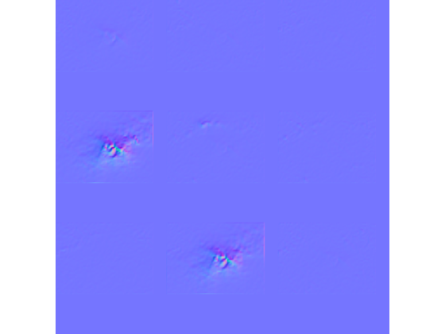
%Export tree centroids to csv file for ASTC map % export_tree_centroids(leaves_s100,contract,'demo_ASTC_output');
%Example how to view saved displacement magnitude animation %uncomment and run line: % play_animation(contour_frame,1,3); %play animation 1 time at 3 fps
%Example how to view individual frame of saved velocity quiver animation %uncomment and run line: % play_animation(quiver_frame(4),1,1); %view frame 4 of quiver video
%-----------------------------To save video-------------------------------- % mov=binary_video; % movie2avi(mov, 'export_video') %-------------------------------------------------------------------------- %EOF